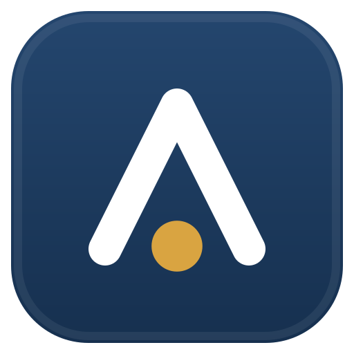
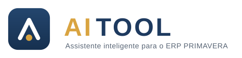
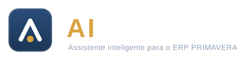
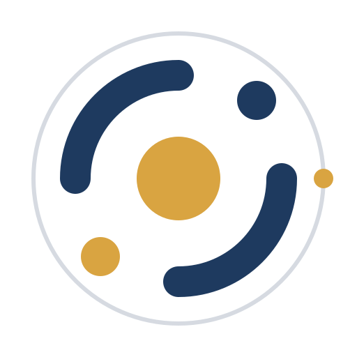
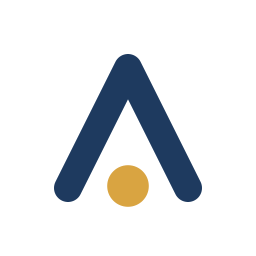
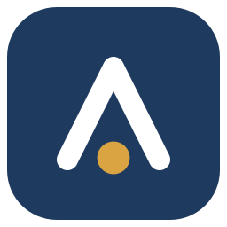

A identidade visual do assistente inteligente para o ERP PRIMAVERA. Esta página mostra os ficheiros que estão realmente no repositório — se algo aqui aparecer partido, o asset está partido.
Um monograma A·i: o "A" desenhado como cursor a apontar para cima, com um ponto dourado que é ao mesmo tempo o "i" e o utilizador no centro da conversa. Lê-se como assistente que eleva — não como mais um chatbot.
* Abaixo de 48 px usa-se aitool-mark-small.svg:
traço mais grosso e ponto maior, para o símbolo não desaparecer quando é rasterizado.
O teste que decide tudo: 16 px, ao lado dos ícones nativos do Primavera, nos dois temas.
O dourado marca sempre o mesmo papel: o ponto onde o assistente age. Nunca se usa como preenchimento de grandes áreas.
Segoe UI Bold, AI em dourado e TOOL em navy (ou branco sobre
escuro), com letter-spacing largo. Usa-se onde há espaço horizontal; em ícone usa-se só o
símbolo.


O núcleo orbital — centro dourado, arcos e satélites — representa o agente a orquestrar as ferramentas à volta do ERP. Vive em ilustração (site, vídeo, splash, fundos), nunca como substituto do símbolo nem como ícone de aplicação.


Cada uma existe para um contexto. Escolher pelo fundo, não pelo gosto.




SvgImage do DevExpress 21.2.3, que só lê formas e paths com fills sólidos —
sem gradientes, filtros, máscaras ou CSS. É por isso que existe o
mark-flat: o master com gradiente é só para marketing.
UI/Resources ou Installer/branding.| Ficheiro | Usar quando |
|---|---|
svg/aitool-mark.svg | Master com gradiente — marketing, site, ≥48 px |
svg/aitool-mark-flat.svg | Produto e DevExpress (sem gradientes) |
svg/aitool-mark-small.svg | Variante ótica 16–32 px |
svg/aitool-glyph-navy.svg / -white.svg | Glifo sem tile, sobre claro / escuro |
svg/aitool-mono-black.svg / -white.svg | Monocromático: impressão, gravação |
svg/aitool-orbital.svg / -white.svg | Ilustração de apoio |
svg/aitool-wordmark.svg / -dark.svg | Lockup símbolo + wordmark |
png/mark-*.png | Exports 16–512 px, fundo transparente |
png/og-1200x630.png | Imagem OpenGraph / social |